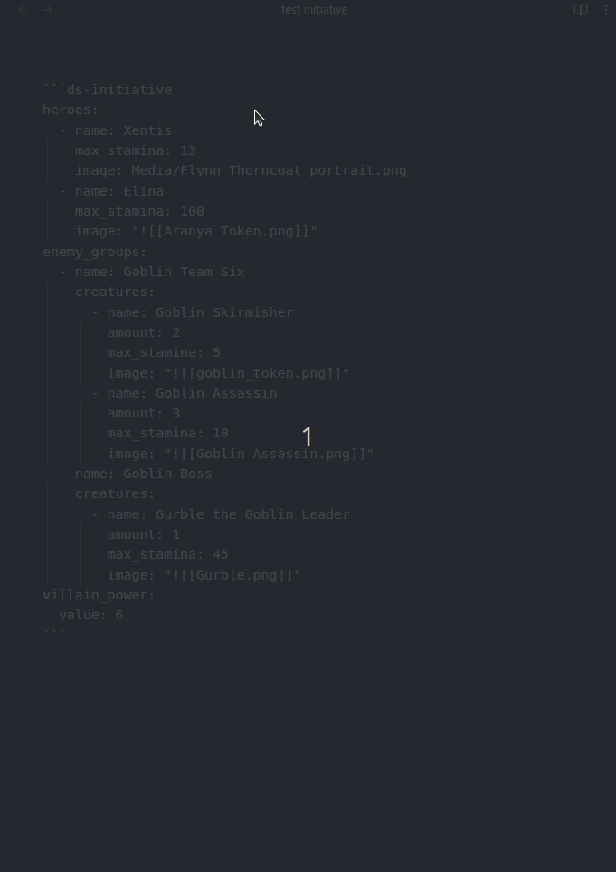
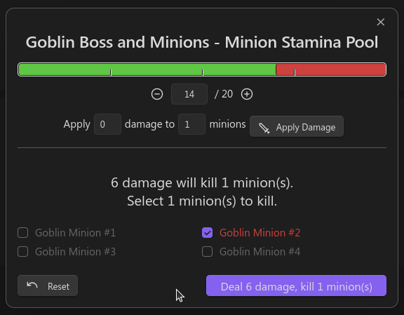
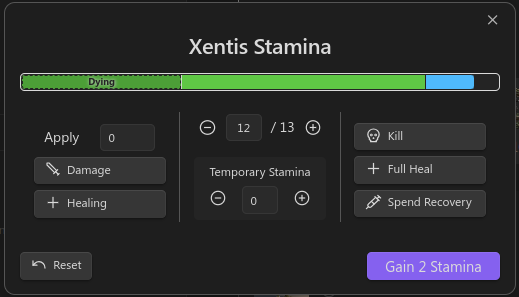
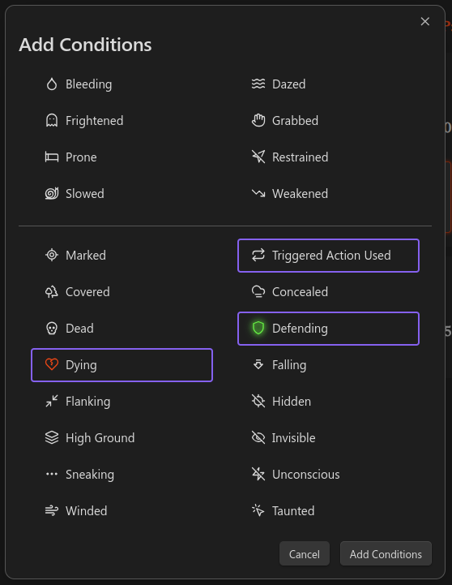

Initiative Tracker¶
The Initiative Tracker helps manage combat encounters efficiently. It provides an interactive interface to track heroes, enemy groups, their health, conditions, and turn order.
The Initiative Tracker uses YAML-defined data to represent the state of an encounter, including heroes, enemy groups, and the villain's power level. The YAML codeblock is where the initial encounter data is configured, but it will also be where state is persisted for easy transfer to other systems via whatever file-sync solution you use.

Quick Start Example¶
~~~ds-initiative
heroes:
- name: "Frodo Baggins"
max_stamina: 80
image: "images/frodo.png"
- name: "Samwise Gamgee"
max_stamina: 90
image: "images/sam.png"
enemy_groups:
- name: "Mordor Forces"
creatures:
- name: "Orc"
max_stamina: 40
amount: 4
image: "images/orc.png"
- name: "Troll"
max_stamina: 150
amount: 1
image: "images/troll.png"
malice:
value: 5
~~~
In the above example, there are two Heroes and one Enemy Group (Initiative Groups) named "Mordor Forces," which contains 4 Orcs and 1 Troll. The Villain Power starts at 5.
How to Use¶
To use the Initiative Tracker, you need to include a code block with the ds-initiative language identifier in your Obsidian note. Inside this code block, you define your encounter data in YAML format.
In the plugin settings, you can configure a default image to use if none is provided.
Code Block Structure¶
~~~ds-initiative # Your encounter data here
heroes:
- name: "Aragorn"
max_stamina: 120
enemy_groups:
- name: "Orc Horde"
creatures:
- name: "Orc Warrior"
max_stamina: 50
amount: 3
malice:
value: 2
~~~
Encounter Data Format¶
The encounter data consists of three main sections:
- Heroes: Player characters participating in the encounter.
- Enemy Groups: Groups of enemies, each containing one or more types of creatures.
- Malice: The current villain power level.
Heroes¶
Hero Fields¶
name(string, required): The name of the hero.max_stamina(number, required): The maximum health points (stamina) of the hero.statblock(string or object, optional): A reference to a statblock file or an inline statblock object. If provided,name,max_stamina, andimagewill be populated from the referenced statblock if they are not explicitly set.current_stamina(number, optional): The current health points of the hero. Defaults tomax_staminaif not provided.temp_stamina(number, optional): Temporary health points (stamina). Defaults to0.image(string, optional): Path to the hero's image.conditions(list of strings, optional): List of condition keys affecting the hero.has_taken_turn(boolean, managed): Indicates if the hero has taken their turn. Managed by the tracker.
Example¶
heroes:
- name: "Gandalf"
max_stamina: 100
current_stamina: 85
temp_stamina: 5
image: "images/gandalf.png"
conditions:
- "blinded"
Enemy Groups¶
An enemy group represents a collection of creatures that act together in the initiative order.
Enemy Group Fields¶
name(string, required): The name of the enemy group.creatures(list of creatures, required): List of creature definitions.is_squad(boolean, optional): Indicates if the creatures in this group are a squad of minions. Defaults tofalse.minion_stamina_pool(number, managed): The current combined stamina pool of the minion group. Managed by the tracker.has_taken_turn(boolean, managed): Indicates if the group has taken a turn. Managed by the tracker.selectedInstanceKey(string, managed): The key of the currently selected creature instance. Managed by the tracker.
Creatures¶
Each creature in the creatures list has the following fields:
name(string, required): The name of the creature.max_stamina(number, required): The maximum health points of the creature.statblock(string or object, optional): A reference to a statblock file or an inline statblock object. If provided,name,max_stamina, andimagewill be populated from the referenced statblock if they are not explicitly set.amount(number, required): The number of instances of this creature.instances(list of CreatureInstance, managed): List of creature instances. Managed by the tracker.image(string, optional): Path to the creature's image.squad_role(string, optional): If this Enemy Group is a squad, indicates if the creature role iscaptainorminion
Creature Instance Fields¶
id(number, managed): Unique identifier for the instance.current_stamina(number, managed): Current stamina of the instance.temp_stamina(number, managed): Current temporary stamina of the instance.isDead(boolean, managed): Indicates if the creature instance is dead.conditions(list of strings, managed): Conditions affecting the instance.
Example¶
enemy_groups:
- name: "Goblin Gang"
creatures:
- name: "Goblin"
max_stamina: 30
amount: 5
image: "images/goblin.png"
- name: "Undead Horde"
is_squad: true
creatures:
- name: "Skeleton"
max_stamina: 10
amount: 10
image: "images/skeleton.png"
squad_role: minion
In this example, "Goblin Gang" is a regular enemy group, while "Undead Horde" is a minion group consisting of 10 Skeletons.
Referencing Statblocks¶
You can reference existing statblocks to populate creature or hero data (Name, Max Stamina, and Image). This is done using the statblock field.
The reference supports multiple formats:
- Full Path from vault root:
Homebrew/monsters/MonsterName.md(with or without.md) - Relative to Compendium root:
Bestiary/Monsters/MonsterName(with or without.md) - File Name:
MonsterName(with or without.md) looks forMonsterName.mdanywhere in the vault - Link:
[[MonsterName]]will use the first found link matching the name.
Important: if using File Name or Link and there are multiple files with the same name, the chosen one is not guaranteed. To ensure the correct file, specify the full path
When a statblock is referenced, the plugin will look for the first Draw Steel Element code block (ds-statblock or similar) in that file and use its data.
Example using references:
...
enemy_groups:
- name: "Dragon Encounter"
creatures:
- statblock: "Thorn Dragon"
amount: 1
- statblock: "Bestiary/Monsters/Kobold"
amount: 5
In this case, the Thorn Dragon's name, max stamina (or stamina), and image will be automatically loaded. You can still override these values by explicitly providing them in the YAML.
Minions and Captains¶
Minions are groups of weaker creatures that share a combined stamina pool and act together in combat. They are managed differently from regular creatures in the Initiative Tracker.
To define a minion group, set the is_squad field to true in the enemy group definition. In a creature object, set the squad_role field to minion.
Additionally, you can add another creature object to the Enemy group (squad) and set its squad_role to captain. This has no effect right now, but may change in the future.
Malice¶
Fields¶
value(number, required): The current villain power level.
Example¶
malice:
value: 3
Interacting with the Tracker¶
Once your encounter is defined, the Initiative Tracker provides an interactive UI in your note.
Heroes¶
- Turn Indicator: Click on the circle icon next to a hero's name to mark whether they have taken their turn.
- Stamina Management: Click on the hero's stamina display to open a modal where you can:
- Apply damage or healing.
- Adjust temporary stamina points.
- Conditions: Add or remove conditions affecting the hero.
Enemy Groups¶
- Turn Indicator: Similar to heroes, click on the circle icon next to the enemy group's name.
- Creature Grid:
- Selection: Click on a creature instance to view its details.
- Health Management:
- Regular Creatures: Double-click on a creature instance to open the health management modal.
- Minions: Click on the stamina display of the minion group to open the Minion Stamina Pool modal.
Stamina Pool Modal for Minions¶
The Stamina Pool modal for Minions allows you to manage the combined stamina of a minion group. This modal works similarly to the Stamina Modals for normal creatures, but has some additional functionality.
When the Stamina Pool of minions gets reduced to thresholds that would kill a minion, the modal will allow the user to select which minion to kill. The modal has some guardrails in place to help ensure the Director is following minion rules, but its not perfect and there is some flexibility.

Malice¶
Adjusting: Use the up and down arrows next to the villain power display to increase or decrease the value.
Reset Round¶
Click the "Reset Round" button to clear all turn indicators and start a new round.
Reset Encounter State¶
Click the "Reset Encounter State" button to clear all "state" data from the tracker. All state will be lost including current stamina, conditions, turn tracker, and villain power. Warning: this is a destructive operation
Stamina Management¶

Adjusting Stamina Incrementally¶
- Use the "+" and "-" buttons next to the stamina value to increment or decrement by 1.
- Alternatively, edit the stamina value directly in the input field.
Applying Specific Damage or Healing¶
- Enter Amount: Input the amount in the "Apply" field.
- Click "Damage" or "Healing":
- Damage: Reduces temporary stamina first, then reduces current stamina.
Managing Temporary Stamina¶
- Use the "+" and "-" buttons next to the temporary stamina value.
- Edit the temporary stamina value directly in the input field.
Quick Modifiers¶
- Kill: Sets current stamina to zero (creatures) or negative half maximum stamina (heroes), removes all temporary stamina.
- Full Heal: Restores current stamina to maximum.
- Spend Recovery: Increases current stamina by one-third of the maximum stamina.
Conditions¶
Conditions represent status effects affecting heroes or creatures, such as "dazed" or "slowed".

Adding a Condition to a Hero or Creature:
- Click the "+" icon in the conditions section.
- Select conditions from the list by clicking them.
- Click "Add Conditions".
Optionally, you can customize the appearance of the condition:
- Open the condition customization modal:
- Click the "cog" icon when hovering over the condition in the "Add Conditions" modal OR
- Double-click the condition in the "Add Conditions" modal.
- Change the color or effect with the provided selectors.
Removing a Condition:
- Click on the condition icon to remove it.
Data Persistence¶
All interactions with the tracker update the underlying YAML data in the code block. This ensures that your encounter state is preserved even after closing and reopening the note.